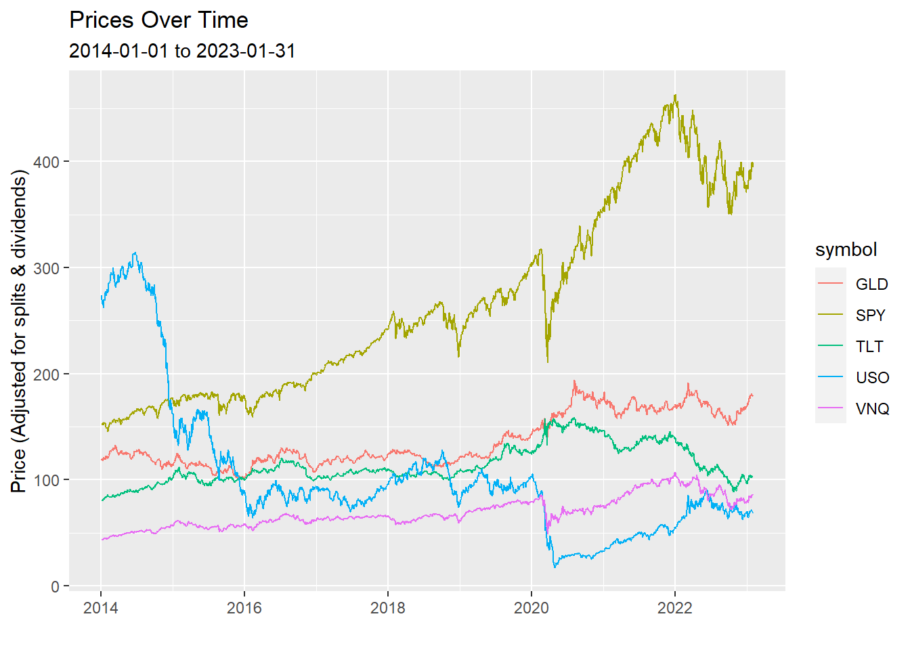
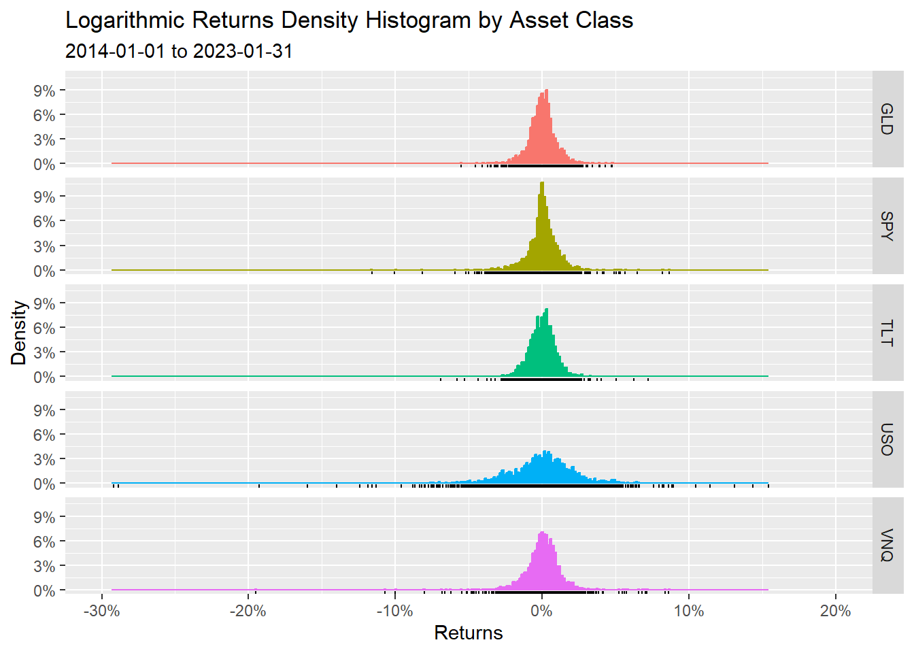
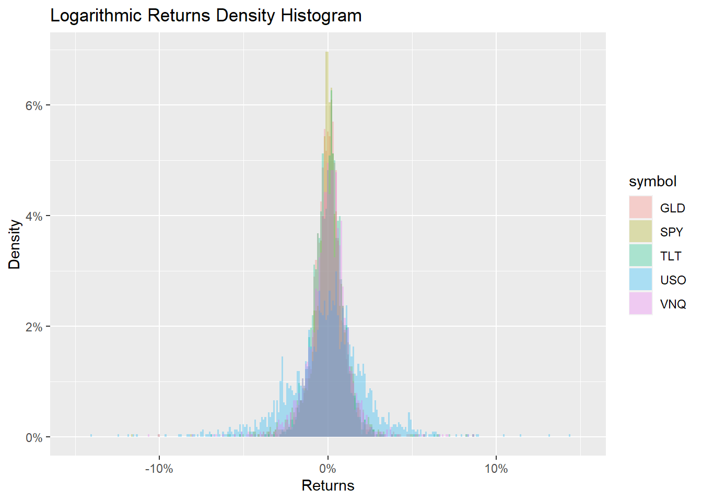
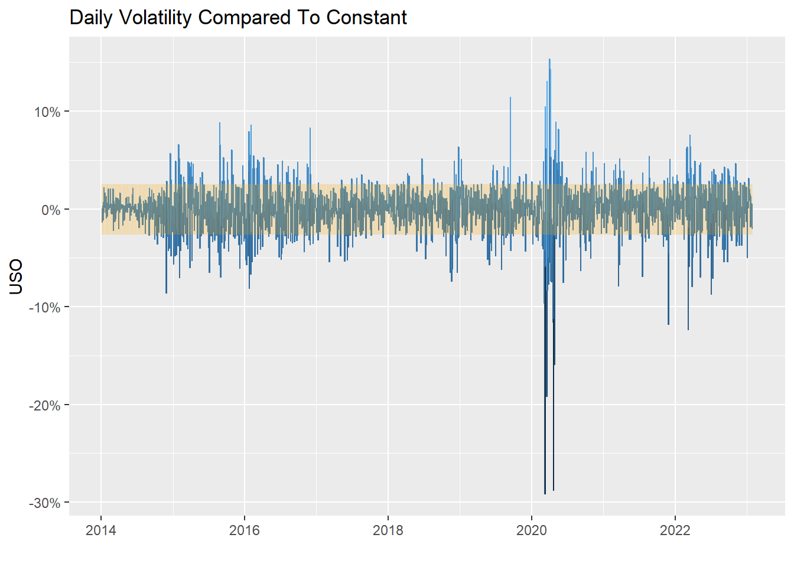
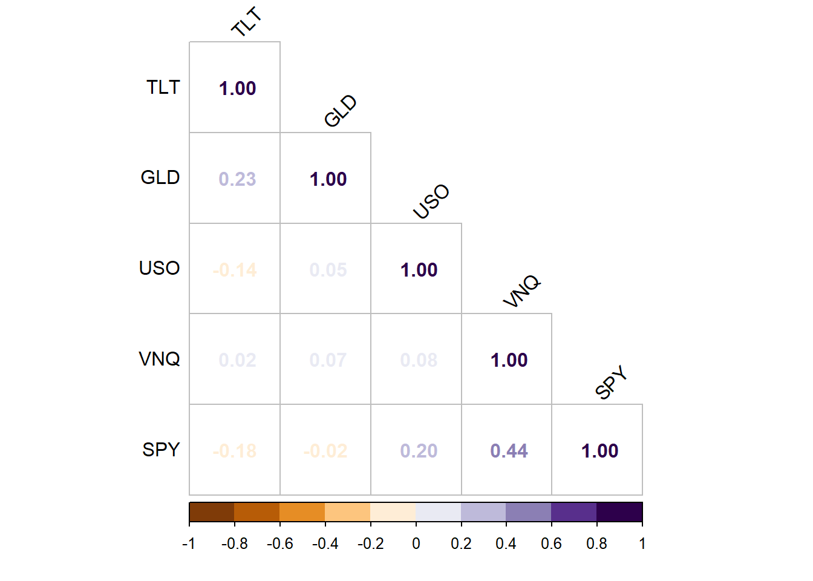
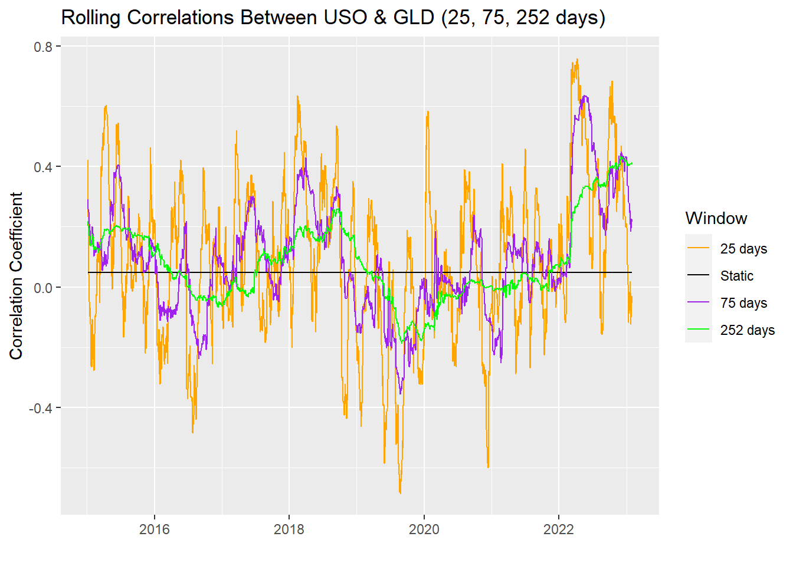

Asset Classes
Preface
Historical price data across multiple asset classes has been used to analyze their returns and formulate conclusions. The chosen data is as follows:
- US Long Term Bonds: https://etfdb.com/etf/TLT/#etf-ticker-profile
- Energy Liquids, United States Oil Fund: https://etfdb.com/etf/USO/#etf-ticker-profile
- Gold: https://etfdb.com/etf/GLD/#etf-ticker-profile
- Real Estate: https://etfdb.com/etf/VNQ/#etf-ticker-profile
- US Equities: https://etfdb.com/etf/SPY/#etf-ticker-profile
Follow the attached links for more information.
Note that throughout the visualizations in this document, the data chosen to represent the asset classes will be identified using their ticker:
- US Long Term Bonds: “TLT”.
- Energy Liquids: “USO”.
- Gold: “GLD”.
- Real Estate: “VNQ”.
- US Equities: “SPY”.
Summary
- Energy Liquids are the most volatile.
- Real Estate is the most susceptible to extreme or infrequent events.
- The returns of Real Estate and US Equities have the highest static correlation.
- The correlation of returns between Gold and Energy Liquids is non-constant, differing over time.
- None of the asset classes appear consistent with a normal distribution, backed by normality testing.
Findings
To frame the analysis that follows, below is a chart that may prove helpful to refer to. It includes prices across asset classes since 2014:
Histograms are a good representation of the distribution of returns. Returns are categorized by volume within a certain range, then plotted based on the density of the occurrences within those ranges. Below are a series of histograms for all the asset classes being analyzed:

The shapes of the distributions seem quite similar, apart from a few key differences. One is that Energy Liquids (USO) is clearly less compact around its average return. This points towards higher volatility. Another detail to notice is the black bars below the distributions. These indicate data points. Note that the Real Estate class (VNQ) has many points that occur outside the ‘meat’ of the distribution. This indicates a higher probability of extreme returns in relation to its average return (more susceptible to an event such as a market crash).
For a better visual comparison of the distribution shapes, here is them all overlapped:

For further context into the volatility of Energy Liquids, here is a chart of daily volatility levels in comparison to its constant volatility over time:

To take a more in-depth look at the histogram data, distribution moments (average, standard deviation, skewness and kurtosis) are presented in the following table:
| Asset Distribution Moments | |||
| Mean | Standard Deviation | Skewness1 | Kurtosis1 |
|---|---|---|---|
| GLD | |||
| 0.018% | 0.893% | −0.106 | 6.042 |
| SPY | |||
| 0.042% | 1.134% | −0.813 | 16.899 |
| TLT | |||
| 0.011% | 0.924% | −0.001 | 8.772 |
| USO | |||
| −0.061% | 2.561% | −1.598 | 21.701 |
| VNQ | |||
| 0.030% | 1.309% | −1.809 | 32.621 |
| 1 Skewness & Kurtosis are pure numbers (no units). | |||
The table highlights the mean (average) returns, standard deviation (volatility), skewness and kurtosis. Skewness is how skewed to the left or right of the average the distribution is. Kurtosis is how frequently events occur that are considered extreme compared to what a normal distribution would predict. Normal distributions have skewness of 0 and kurtosis of 3. Varying levels of negative skew is seen across all assets, with Long Term Bonds sitting very close to 0. Kurtosis levels differ drastically, with Real Estate exhibiting the most (as mentioned previously above).
Although gold and Long Term Bonds exhibit the least extreme values above, none of these assets appear consistent with a normal distribution.
Below is a static Correlation Matrix between all asset classes:

Note the highest static correlation appears to be between Real Estate and US Equities.
Further analysis on the correlation between Energy Liquids and Gold has found that the correlation differs over time. Windows of 25, 75, and 252 days were used, plotted against the static correlation found in the above matrix:

This highlights that the volatility of the correlation between Gold and Energy Liquids varies over time. It is significantly amplified when measured over a shorter window.
To reliably test whether each asset class matches a normal distribution, the Jarque-Bera Normality Test has been computed. If the statistic is 0, then the data follows a normal distribution. Here are the results from the test:
| Jarque-Bera Normality Test | ||
| Statistic | P. Value | Alternative |
|---|---|---|
| GLD | ||
| 884.93 | 0 | greater |
| SPY | ||
| 18,636.23 | 0 | greater |
| TLT | ||
| 3,170.74 | 0 | greater |
| USO | ||
| 34,253.70 | 0 | greater |
| VNQ | ||
| 84,745.07 | 0 | greater |
Notice all the values differ significantly from 0, further solidifying that these distributions are non-normal.
To test this further, the US equities (SPY) asset class has been run through another normality test, the Kolmogorov-Smirnov Test:
- Statistic: 0.4820142
- P. Value: 0
since the P. Value is 0, we have sufficient evidence to say that US equities do not follow a normal distribution.